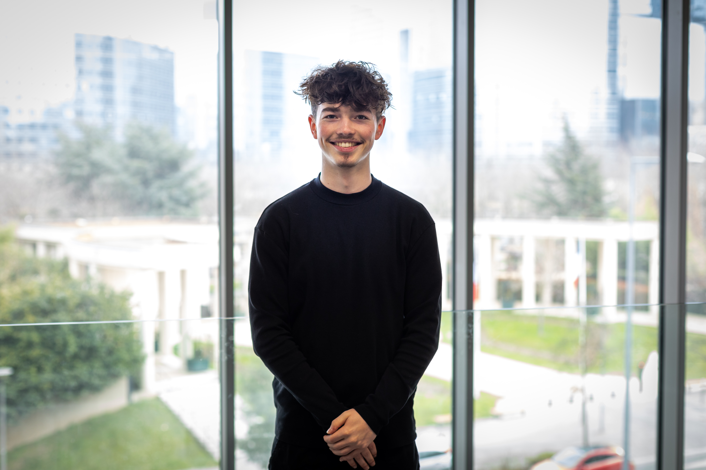
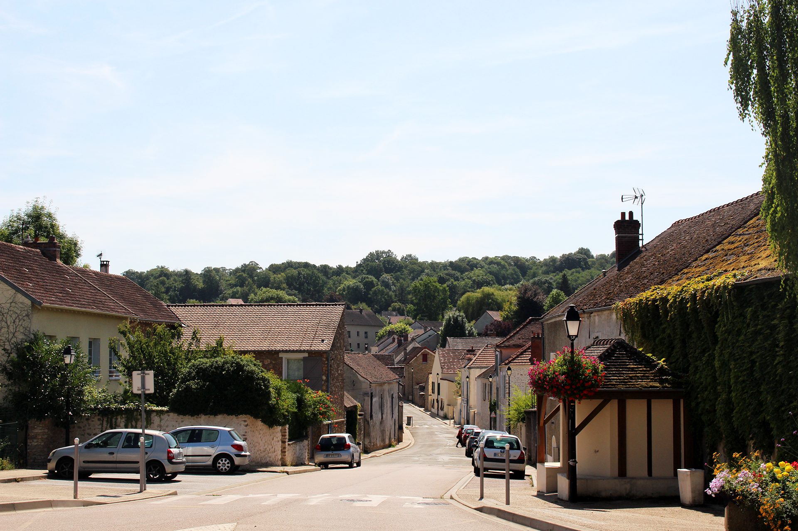
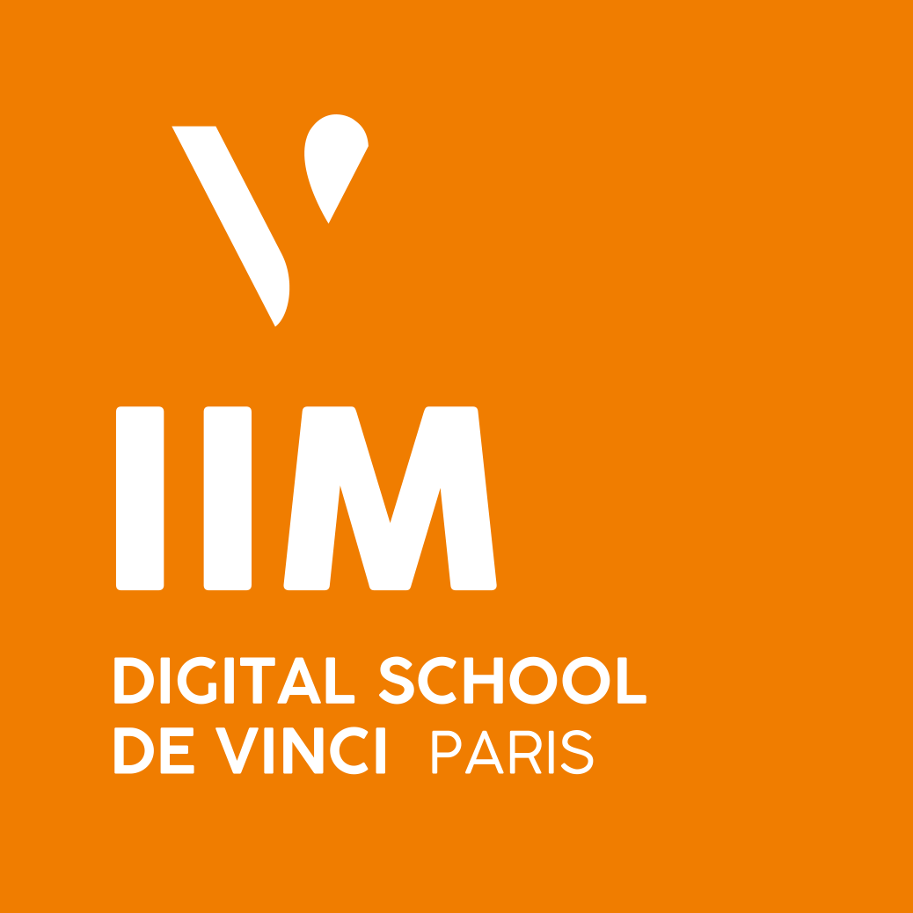

Né Hugo Senée fêtera très prochainement ses 19 ans, Il habite depuis peu à Morainvilliers dans la commune des Yvelines avec ses 3 soeurs, son chez Little, un Basset Hound et ses 2 chats.
Voici à quoi ressemble Morainvilliers

Hugo est étudiant en 2ème année à l'IIM, dans l'axe Coding and Digital Innovation. Après ses cours, il part travailler dans un restaurant près de chez lui.

Passionné de Disney et en particulier de Star Wars, il collection les figurines de cet univer qu'on retrouve sur les murs de sa chambre. Hugo est aussi pationné de basketball qu'il pratique depuis son plus jeune âge.